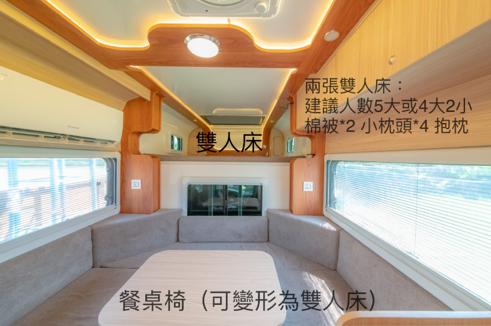
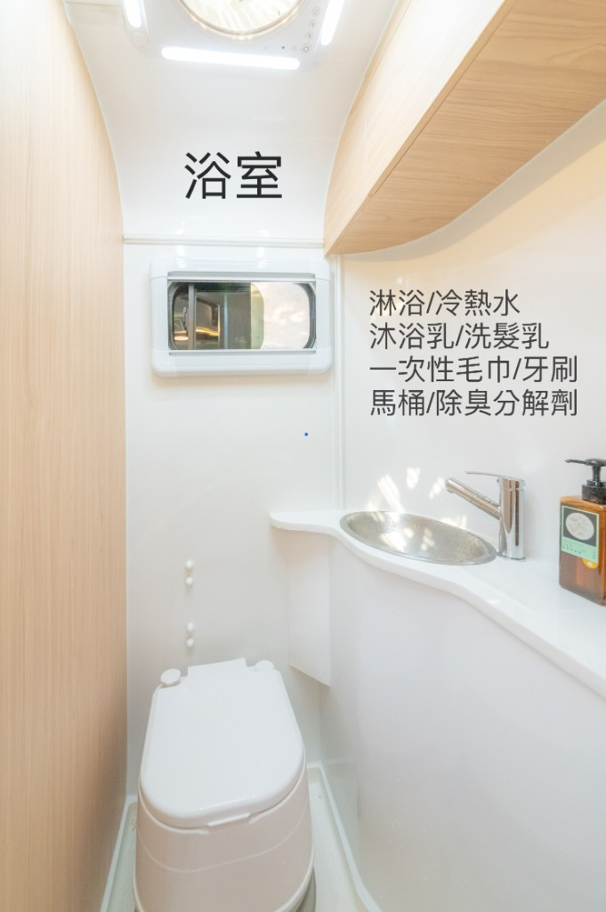
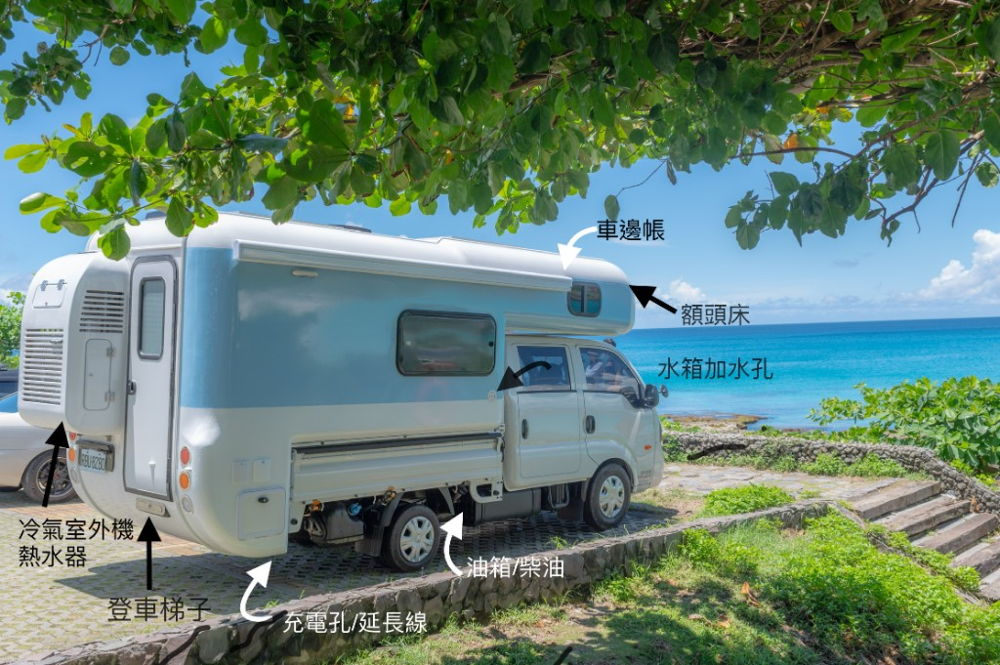
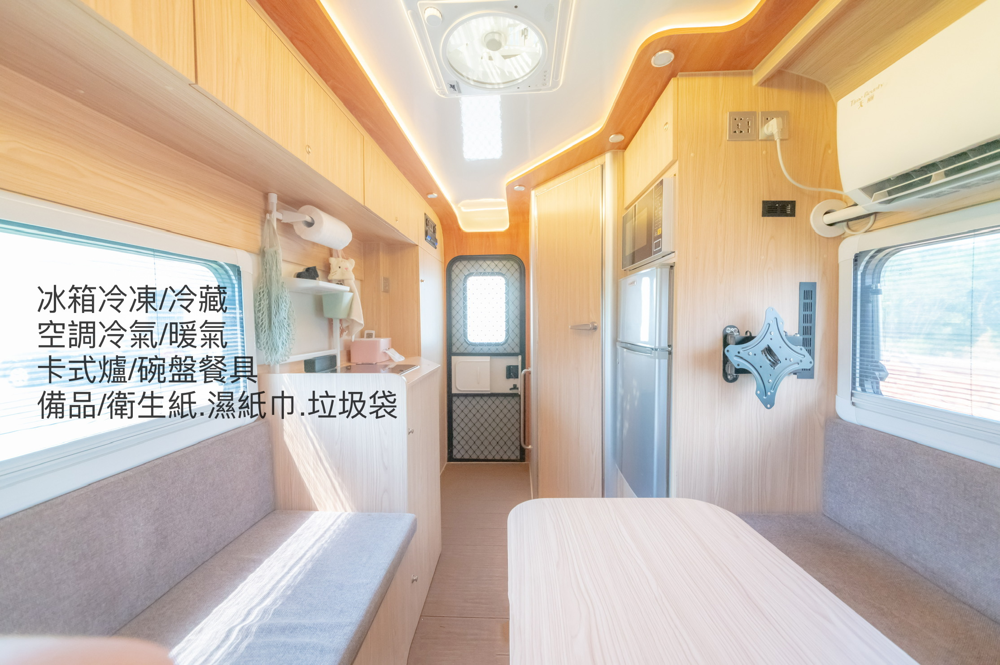
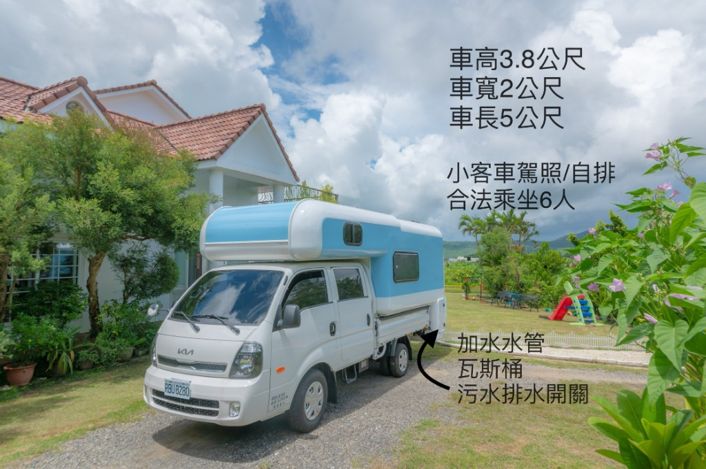

冷暖氣
夏天降溫、冬天保暖
車內配置冷暖氣，夏天可以降溫，冬天也能保暖。若長時間使用冷氣，建議選擇可外接電源的露營區，使用上會更安心。
以 3 天 2 夜為基本租借方案，適合第一次體驗露營車旅行、親子出遊、好友旅行與小團體露營。
3 天 2 夜 / 48 小時
3 天 2 夜 / 48 小時
中秋、跨年、連續假期、熱門檔期
依實際天數、送車地點、加購設備與特殊需求確認，請以預約時報價為準。
| 項目 | 價格 |
|---|---|
| 平日加一天 | NT$2,800 |
| 假日加一天 | NT$4,800 |
| 押金 | NT$5,000（ETC、停車費、清潔、遺失、設備損壞或車損等後續結算用） |
露營車旅行和一般租車不同，需要時間熟悉車內設備、安排行程、停靠露營區與慢慢享受戶外生活。如果只租 2 天 1 夜，時間通常會太趕，體驗不完整。
因此我們以 3 天 2 夜作為主要方案，讓客人有比較充裕的時間安排旅行，也比較能感受到露營車真正好玩的地方。
下訂前先對車內空間、床位與衛浴有畫面，細部操作以交車教學為準。



一次看懂車子多大、能睡幾個人、駕照需求與主要配備。
| 車型 | 露營車／露營廂車 |
|---|---|
| 駕照 | 一般小客車駕照即可，自排車 |
| 合法乘坐 | 6 人 |
| 建議睡眠 | 5 位大人，或 4 大 2 小 |
| 車長 | 約 5 公尺 |
| 車寬 | 約 2 公尺 |
| 車高 | 約 3 公尺（約一層樓高，請留意限高、雨遮與地下停車場） |
| 床位 | 2 張雙人床（其中一張由餐桌區變形） |
| 空調 | 冷暖氣 |
| 冰箱 | 約 70L 冷藏冷凍 |
| 水箱 | 約 110 公升清水 |
| 衛浴 | 可簡易洗澡、冷熱水、馬桶 |
| 電力 | 車內電力、USB、外接充電 |
| 適合用途 | 露營、親子旅行、好友出遊、活動休息室、移動住宿體驗 |
行車時請留意「車高」與「車長」，詳細開車提醒請見露營車使用教學｜開車注意事項。
合法乘坐 6 人，建議睡眠 5 位大人或 4 大 2 小。

這台露營車合法乘坐 6 人，車內配置兩張雙人床。其中一張為固定床，另一張由餐桌椅區變形成床。
建議睡眠人數為 5 位大人，或 4 位大人加 2 位小孩。如果是親子家庭、朋友揪團、情侶旅行，空間使用上會比較剛好。
客廳怎麼變床？請看 使用教學｜床鋪與變床影片 ，或參考本頁下方變床步驟照片與實景預覽。

依類別分區介紹，讓你在下訂前就能先預想使用情境。
車內配置冷暖氣，夏天可以降溫，冬天也能保暖。若長時間使用冷氣，建議選擇可外接電源的露營區，使用上會更安心。
車內有冷藏與冷凍冰箱，可放飲料、食材、早餐、冰塊與簡單料理材料，適合 2–3 天輕旅行使用。
車內提供卡式爐、基本餐具與簡單料理空間。可以煮泡麵、熱湯、早餐、咖啡、簡單火鍋或露營料理。
車內有簡易衛浴設備，可使用冷熱水，也有馬桶。適合戶外旅行、露營區停靠、親子旅行或臨時休息使用。
露營車衛浴是簡易型衛浴，適合基本沖洗，不是飯店式長時間大量用水的浴室。
車內提供基本電力與 USB 充電，可支援手機、燈具、冰箱與一般生活用電。若需要長時間使用冷氣或高耗電設備，建議安排有外接電源的露營區。
可提供基本備品，例如沐浴乳、洗髮乳、一次性毛巾、牙刷、馬桶分解劑等。實際內容依當次租借方案確認。
這些功能交車時會實際教學，不用事先完全記住。
這一區主要讓客人知道露營車具備完整的生活功能，實際操作請依交車教學為準。
想先看圖片與詳細說明，請到露營車使用教學。

露營車可以搭配戶外露營套組，讓旅行更有氣氛，也更適合拍照。
實際內容依預約方案、庫存與天候狀況確認。

依下列項目先整理好，傳給我們可以更快完成報價。
如果你不確定行程是否適合露營車，也可以先傳訊息詢問。我們可以依照人數、日期、目的地與使用方式，協助你判斷適合的租借天數與設備搭配。